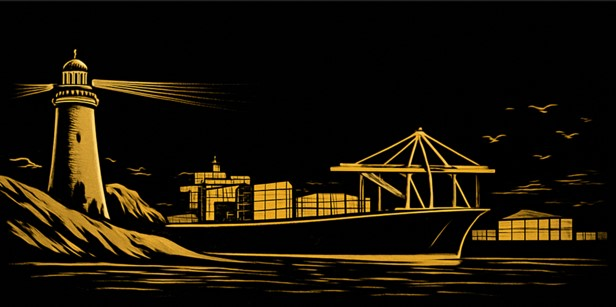

Café de especialidad tostado y envasado en Valparaíso
Granopuerto no es solo café
Es historia, viaje y carácter porteño en cada sorbo.
Granos seleccionados del mundo, transformados en una experiencia única.
